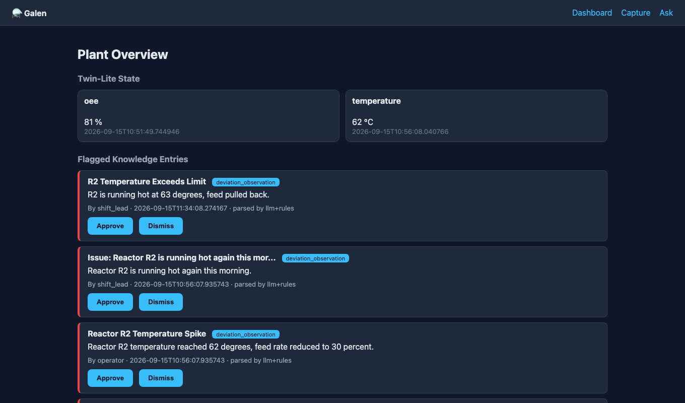

Realtime streaming STT, diarization, keyterms — multilingual plant floor.
LLM Gateway turns huddles into typed, cited knowledge entries.
Grounded, spoken answers with citations — nothing gets lost.
Knowledge lives in 6 a.m. huddles and handovers — rarely written down.
Deviations and near-misses repeat because the fix was never recorded.
QA rebuilds "what happened" after the fact, one transcript at a time.
New operators repeat mistakes the night shift already solved.
Operators code-switch between English, Luganda, Swahili.
Knowledge gaps are invisible until an inspection or an incident.
AssemblyAI v3 transcribes the huddle live, with speakers and language labels.
LLM Gateway + rule layer produce typed entries that cite exact turns.
Metrics update equipment state; threshold breaches raise alerts.
Operators ask by voice; get grounded, spoken answers — or book a gap.
Every model step has a rule-based fallback, so a known phrase is never lost to a timeout or rate limit.
Only deviations, CAPAs and threshold breaches escalate to a human — approval is explicit.

universal-3-5-pro live transcription over WebSocket — word-by-word, with speaker diarization and language detection.
“Reactor R2”, “CAPA”, “out of specification” boosted at the audio layer on a noisy plant floor.
Structured extraction into typed entries with JSON-repair post-processing, in parallel with deterministic rules.
Retrieval over cited entries; answers audited back to the source turns and twin state.
Upload a recording in the Ask page and it flows through the same pipeline.
Spoken answers, hands-free on the plant floor — no extra backend.
index / capture / ask pages; config.js points at the API base with CORS.
Streaming WebSocket straight from the page; token minted by the backend.
FastAPI via Mangum; async AssemblyAI + LLM calls; 60s budget.
Entries, sessions, twin state, feedback — single-table pk/sk.
agent/repo.py — SQLite locally, DynamoDB in production, same API.
scripts/build_lambda.py + deploy_aws.py + deploy_vercel.sh.
Acquire, analyse, store, disseminate — every entry cites speaker, turn and twin state.
Root causes from huddles feed the answers the next shift hears.
New operators ask and get grounded answers instead of guessing.
English / Luganda / Swahili detection, on African plant floors.
“No, still stuck” books a gap as a new flagged entry — nothing lost.
Approve / Dismiss gate on deviations and CAPA candidates.
https://galen-kb.vercel.app
(ask: “What do I do when Reactor R2 runs hot?”)
https://github.com/MarkNwilliam/galen
FastAPI + DynamoDB + vanilla JS · MIT
Streaming v3 STT · LLM Gateway · diarization
AWS Lambda · API Gateway · DynamoDB
Vercel · Web Audio · Browser TTS
ICH Q10 §1.6.1 knowledge management